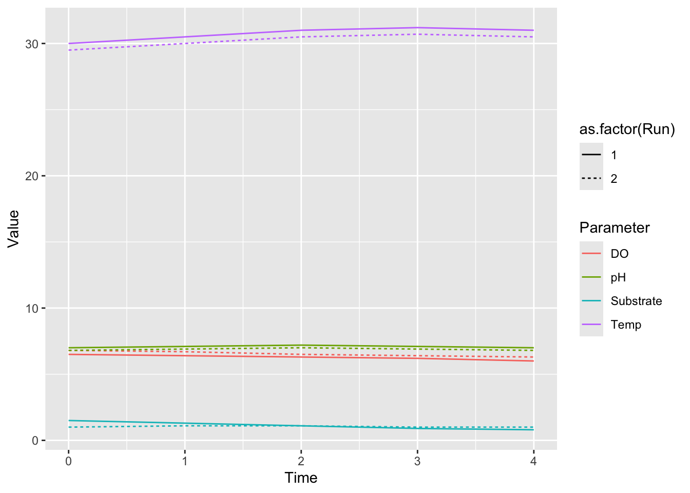
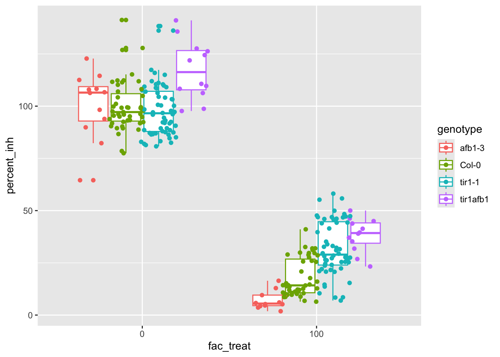

Summarizing Data Examples
## ── Attaching core tidyverse packages ──────────────────────── tidyverse 2.0.0 ──
## ✔ dplyr 1.1.4 ✔ readr 2.1.5
## ✔ forcats 1.0.0 ✔ stringr 1.5.1
## ✔ ggplot2 3.5.1 ✔ tibble 3.2.1
## ✔ lubridate 1.9.4 ✔ tidyr 1.3.1
## ✔ purrr 1.0.4
## ── Conflicts ────────────────────────────────────────── tidyverse_conflicts() ──
## ✖ dplyr::filter() masks stats::filter()
## ✖ dplyr::lag() masks stats::lag()
## ℹ Use the conflicted package (<http://conflicted.r-lib.org/>) to force all conflicts to become errors5.7 Bioreactor Data Analysis
5.7.1 Background
In a bioprocess engineering lab, several bioreactor runs were performed to study the effect of different feed types on process performance. Two datasets were collected:
Bioreactor Readings
This dataset (bioreactor_readings.csv) contains time-series measurements recorded during each run. It is provided in a wide format with columns for the run number, time (in hours), and various sensor readings:Run: Identifier for the bioreactor run.Time: Time stamp (hours).Temp: Temperature (°C).pH: pH level.DO: Dissolved Oxygen (mg/L).Substrate: Substrate concentration (g/L).
Experimental Metadata
This dataset (experiment_info.csv) contains metadata about each run:Run: Run identifier (matching the bioreactor dataset).Feed: Type of feed (e.g., “Glucose”, “Glycerol”).Inoculum: Inoculum concentration (OD units).Operator: Name of the operator in charge.
5.7.2 Tasks
5.7.2.1 1. Import and Inspect the Data
- Load both CSV files into R as data frames.
- Use the `head()` function (or similar) to inspect the first few rows of each dataset.# Load libraries
library(tidyverse)
# Import data
bioreactor <-
read_csv("data/bioreactor_readings.csv")## Rows: 10 Columns: 6
## ── Column specification ────────────────────────────────────────────────────────
## Delimiter: ","
## dbl (6): Run, Time, Temp, pH, DO, Substrate
##
## ℹ Use `spec()` to retrieve the full column specification for this data.
## ℹ Specify the column types or set `show_col_types = FALSE` to quiet this message.## Rows: 2 Columns: 4
## ── Column specification ────────────────────────────────────────────────────────
## Delimiter: ","
## chr (2): Feed, Operator
## dbl (2): Run, Inoculum
##
## ℹ Use `spec()` to retrieve the full column specification for this data.
## ℹ Specify the column types or set `show_col_types = FALSE` to quiet this message.## # A tibble: 6 × 6
## Run Time Temp pH DO Substrate
## <dbl> <dbl> <dbl> <dbl> <dbl> <dbl>
## 1 1 0 30 7 6.5 1.5
## 2 1 1 30.5 7.1 6.4 1.3
## 3 1 2 31 7.2 6.3 1.1
## 4 1 3 31.2 7.1 6.2 0.9
## 5 1 4 31 7 6 0.8
## 6 2 0 29.5 6.8 6.8 1## # A tibble: 2 × 4
## Run Feed Inoculum Operator
## <dbl> <chr> <dbl> <chr>
## 1 1 Glucose 0.15 Alice
## 2 2 Glycerol 0.12 Bob5.7.2.2 2. Data Tidying (Pivoting)
- **Pivot Longer:**\
Convert the bioreactor readings from wide format into a long (tidy) format so that all measurements (Temp, pH, DO, Substrate) are in a single column named `Parameter` with corresponding values in a column named `Value`.\
*Hint: Use `tidyr::pivot_longer()`.*
- **Pivot Wider:**\
After some analysis, you decide to reshape the long dataset back into a wide format, but now grouping by `Run` and `Time` such that each parameter becomes its own column again.\
*Hint: Use `tidyr::pivot_wider()`.*
# 2. Pivot longer: Tidy the bioreactor data
bioreactor_long <- bioreactor %>%
pivot_longer(cols = Temp:Substrate,
names_to = "Parameter",
values_to = "Value")
# This would allow us to plot both parameters on the same plot
ggplot(data = bioreactor_long,
mapping = aes(x = Time,
y = Value,
color = Parameter,
linetype = as.factor(Run))) +
geom_line()
5.7.2.4 3. Joining Datasets
- Merge the reshaped bioreactor dataset with the experimental metadata using the common `Run` column.\
*Hint: Use one of the join functions (e.g., `dplyr::left_join()`).*
5.7.2.5 4. Grouping and Summarizing
- Group the merged dataset by the `Feed` type.
- Calculate summary statistics (e.g., mean and standard deviation, or min and max) for key measurements such as `Temp`, `pH`, and `Substrate` across all time points and runs for each feed type.\
*Hint: Use `dplyr::group_by()` and `dplyr::summarize()`.*# 4. Group and summarize by 'Feed'
summary_stats <- merged_data %>%
group_by(Feed) %>%
summarize(mean_Temp = mean(Temp, na.rm = TRUE),
sd_Temp = sd(Temp, na.rm = TRUE),
mean_pH = mean(pH, na.rm = TRUE),
sd_pH = sd(pH, na.rm = TRUE),
max_Subs = max(Substrate, na.rm = TRUE),
min_Subs = min(Substrate, na.rm = TRUE))
# View summary statistics
print(summary_stats)## # A tibble: 2 × 7
## Feed mean_Temp sd_Temp mean_pH sd_pH max_Subs min_Subs
## <chr> <dbl> <dbl> <dbl> <dbl> <dbl> <dbl>
## 1 Glucose 30.7 0.488 7.08 0.0837 1.5 0.8
## 2 Glycerol 30.2 0.488 6.88 0.0837 1.1 1Interpreting the Results
Discuss how different feed types glucose vs glycerol may be affecting the reactor conditions based on your summary statistics.
What potential insights could an engineer draw from these analyses?
5.8 Root Growth Inhibition Example
5.8.1 Introduction
In my research group we study plant genes and how they function. One interesting thing about plants is that their genomes are quite large compared to other organisms and one of the reasons for that is their genomes have been duplicated several times throughout the history of their evolution

These genome duplications have generated families of genes which have similar but slightly different functions. Often we think about each of these genes in a family as playing a distinct role, and by adding together their function we could approximate their total function. However that’s not always the case because these genes might interact with one another—directly through binding or indirectly through competition—to perform their total function. These interactions might cause some deviation from our additive model of function; in genetics this is called epistasis.
This dataset is from Prigge et al. 2020, who collected measurements of several phenotypes for combinations of mutants in the TIR1/AFB auxin receptor genes which my group studies and engineers.
5.8.2 Read in data
root_growth_inh_0 <- read_xlsx("data/elife-54740-fig1-figsupp3-data1-v2_data-only_tir1afb1.xlsx", sheet = "Primary Root Growth Inh EtOH", skip = 1)
root_growth_inh_20 <- read_xlsx("data/elife-54740-fig1-figsupp3-data1-v2_data-only_tir1afb1.xlsx", sheet = "Primary Root Growth Inh 20 nM", skip = 1)
root_growth_inh_100 <- read_xlsx("data/elife-54740-fig1-figsupp3-data1-v2_data-only_tir1afb1.xlsx", sheet = "Primary Root Growth Inh 100 nM", skip = 1)
root_growth_inh_500 <- read_xlsx("data/elife-54740-fig1-figsupp3-data1-v2_data-only_tir1afb1.xlsx", sheet = "Primary Root Growth Inh 500 nM", skip = 1)5.8.3 Write a function for tidying this data
root_growth_plonger <- function(data){
data |>
pivot_longer(cols = -line,
names_to = "genotype",
values_to = "root_growth_mm") %>%
mutate(batch = str_extract(genotype, "\\s(.*)$")) %>%
mutate(batch = str_remove_all(batch, "\\s")) %>%
mutate(genotype = str_remove(genotype, "\\s.*")) %>%
mutate(batch = if_else(is.na(batch), "a", batch)) %>%
na.omit()
}5.8.4 Tidy the individual datasets
root_growth_inh_0 <- root_growth_plonger(root_growth_inh_0)
root_growth_inh_0$treatment <- 0
root_growth_inh_20 <- root_growth_plonger(root_growth_inh_20)
root_growth_inh_20$treatment <- 20
root_growth_inh_100 <- root_growth_plonger(root_growth_inh_100)
root_growth_inh_100$treatment <- 100
root_growth_inh_500 <- root_growth_plonger(root_growth_inh_500)
root_growth_inh_500$treatment <- 500
root_growth_inh <- bind_rows(root_growth_inh_0,
root_growth_inh_20,
root_growth_inh_100,
root_growth_inh_500)
root_growth_inh %>% group_by(batch) %>%
mutate(percent_inh = root_growth_mm /
mean(root_growth_mm[genotype == "Col-0" & treatment == 0]) * 100) ->
root_growth_inhroot_growth_inh_aov <- aov(percent_inh ~ genotype*treatment + batch, data = root_growth_inh)
summary(root_growth_inh_aov)## Df Sum Sq Mean Sq F value Pr(>F)
## genotype 4 4807 1202 1.865 0.11536
## treatment 1 423486 423486 657.249 < 2e-16 ***
## batch 2 7356 3678 5.708 0.00355 **
## genotype:treatment 4 31237 7809 12.120 2.16e-09 ***
## Residuals 479 308635 644
## ---
## Signif. codes: 0 '***' 0.001 '**' 0.01 '*' 0.05 '.' 0.1 ' ' 1root_growth_inh$fac_treat <- as.factor(root_growth_inh$treatment)
root_growth_inh_aov <- aov(percent_inh ~ genotype*fac_treat + batch, data = root_growth_inh)
summary(root_growth_inh_aov)## Df Sum Sq Mean Sq F value Pr(>F)
## genotype 4 4807 1202 10.951 1.69e-08 ***
## fac_treat 3 708852 236284 2153.098 < 2e-16 ***
## batch 2 1084 542 4.939 0.00754 **
## genotype:fac_treat 9 8981 998 9.093 9.95e-13 ***
## Residuals 472 51798 110
## ---
## Signif. codes: 0 '***' 0.001 '**' 0.01 '*' 0.05 '.' 0.1 ' ' 1root_growth_inh_aov.HSD <- broom::tidy(TukeyHSD(root_growth_inh_aov))
root_growth_inh_aov.HSD[which(root_growth_inh_aov.HSD$adj.p.value < 0.05),]## # A tibble: 121 × 7
## term contrast null.value estimate conf.low conf.high adj.p.value
## <chr> <chr> <dbl> <dbl> <dbl> <dbl> <dbl>
## 1 genotype tir1-1-… 0 6.55 3.47 9.62 1.04e- 7
## 2 genotype tir1-10… 0 7.57 3.42 11.7 7.93e- 6
## 3 genotype tir1afb… 0 6.41 1.11 11.7 8.76e- 3
## 4 fac_treat 20-0 0 -36.5 -40.2 -32.9 2.81e-11
## 5 fac_treat 100-0 0 -75.8 -78.9 -72.7 2.81e-11
## 6 fac_treat 500-0 0 -93.9 -97.4 -90.5 2.81e-11
## 7 fac_treat 100-20 0 -39.3 -42.9 -35.6 2.81e-11
## 8 fac_treat 500-20 0 -57.4 -61.4 -53.4 2.81e-11
## 9 fac_treat 500-100 0 -18.2 -21.6 -14.7 2.81e-11
## 10 genotype:fac_tre… tir1-10… 0 15.4 2.19 28.6 6.04e- 3
## # ℹ 111 more rowsLooks like there are no strong batch effects here.
root_growth_inh %>% filter(genotype != "tir1-10") %>%
filter(treatment %in% c(0,100)) %>%
mutate(TIR1 = !str_detect(genotype, "tir1"),
AFB1 = !str_detect(genotype, "afb1")) ->
root_growth_inhFor now let’s look at the whole dataset.
root_growth_inh.int <- aov(percent_inh ~ TIR1*AFB1*treatment, data = root_growth_inh)
summary(root_growth_inh.int)## Df Sum Sq Mean Sq F value Pr(>F)
## TIR1 1 6758 6758 48.681 2.69e-11 ***
## AFB1 1 470 470 3.386 0.06692 .
## treatment 1 369212 369212 2659.748 < 2e-16 ***
## TIR1:AFB1 1 3158 3158 22.747 3.14e-06 ***
## TIR1:treatment 1 4190 4190 30.184 9.66e-08 ***
## AFB1:treatment 1 1456 1456 10.485 0.00137 **
## TIR1:AFB1:treatment 1 7 7 0.047 0.82862
## Residuals 250 34704 139
## ---
## Signif. codes: 0 '***' 0.001 '**' 0.01 '*' 0.05 '.' 0.1 ' ' 1root_growth_inh.int <- aov(percent_inh ~ TIR1*AFB1*fac_treat, data = root_growth_inh)
summary(root_growth_inh.int)## Df Sum Sq Mean Sq F value Pr(>F)
## TIR1 1 6758 6758 48.681 2.69e-11 ***
## AFB1 1 470 470 3.386 0.06692 .
## fac_treat 1 369212 369212 2659.748 < 2e-16 ***
## TIR1:AFB1 1 3158 3158 22.747 3.14e-06 ***
## TIR1:fac_treat 1 4190 4190 30.184 9.66e-08 ***
## AFB1:fac_treat 1 1456 1456 10.485 0.00137 **
## TIR1:AFB1:fac_treat 1 7 7 0.047 0.82862
## Residuals 250 34704 139
## ---
## Signif. codes: 0 '***' 0.001 '**' 0.01 '*' 0.05 '.' 0.1 ' ' 1ggplot(data = root_growth_inh, aes(x = fac_treat, y = percent_inh, color = genotype)) +
geom_boxplot() + geom_point(position = position_jitterdodge(jitter.width = 0.2))
Strong case for an interaction, but not dependent on treatment, interesting.
To make this easier to explain we can repeat this analysis after stratifying by treatment.
root_growth_inh0.int <- aov(percent_inh ~ TIR1*AFB1, data = filter(root_growth_inh, treatment == 0))
summary(root_growth_inh0.int)## Df Sum Sq Mean Sq F value Pr(>F)
## TIR1 1 43 42.5 0.26 0.611331
## AFB1 1 2030 2030.3 12.40 0.000598 ***
## TIR1:AFB1 1 1700 1700.0 10.38 0.001619 **
## Residuals 127 20800 163.8
## ---
## Signif. codes: 0 '***' 0.001 '**' 0.01 '*' 0.05 '.' 0.1 ' ' 1This matches expectations mostly, I would have expected AFB1 to have less effect, but in this model the double mutant is also contributing to this effect size. The interaction here is still a strong effect. 100 nM should be more telling even.
root_growth_inh100.int <- aov(percent_inh ~ TIR1*AFB1, data = filter(root_growth_inh, treatment == 100))
summary(root_growth_inh100.int)## Df Sum Sq Mean Sq F value Pr(>F)
## TIR1 1 9623 9623 85.129 9.93e-16 ***
## AFB1 1 84 84 0.746 0.38945
## TIR1:AFB1 1 1407 1407 12.445 0.00059 ***
## Residuals 123 13903 113
## ---
## Signif. codes: 0 '***' 0.001 '**' 0.01 '*' 0.05 '.' 0.1 ' ' 1Very interesting, TIR1 has a very strong effect as expected at this high auxin concentration, whereas AFB1 does not, but the interaction term is significant at both 0 nM and 100 nM IAA.